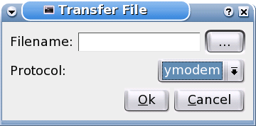
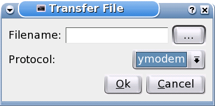

The main window

The option dialog

The transfer dialog
Content
Commi is a line orientated serial terminal like minicom.
It is a fork of CuteCom from Alexander Neundorf.
It is free software and distributed under the GNU General
Public License Version 2.
It is written using the Qt library by Trolltech.
Version : 0.3
Status : stable
Translations : en, de
Source : source
Precomiled packages for:
Slackware 10
You need the devel-packages from X11 and QT 3.x in order to compile from source.
If you want to use x-, y- or zmodem transfers you need the lrzsz-tools.
Sebastian Block <sebbel@users.berlios.de>
The main window
The option dialog

The transfer dialog
Alexander Neundorf for its work with CuteCom.